MOTOR 01
AI Act Radar
- A daily regulatory observatory
- An AI Act Readiness Index, compared directly against the other Member States
- Premium subscriptions for corporate radars
01 / 07
The era of ethical AI
ENIA exists to track the implementation of the AI Act across Europe and Portugal every day — so we can measure, compare and accelerate the adoption and development of AI in this country, on the way to leading the new era.

02 / 07
Four territories · one mission
AI Act Intelligence Centre and the state of national AI progress, updated daily.
Open radar →The National Plan for developing the AI economy, and how we monitor it.
See the strategy →Build AI ethically and turn certification into a competitive instrument on a global scale.
Join the cluster →Equipping every Portuguese citizen for AI — a plan, a certificate and the means to measure it.
See the programme →03 / 07
3 ENIA engines · to drive AI and Portugal forward
MOTOR 01
MOTOR 02
MOTOR 03
04 / 07
Publications & News · automatically gathered from official sources
Feed built from EUR-Lex, the European Commission / AI Office and national regulators. Last collected: —.
Full archive →05 / 07
The case Portugal should read
Finland was the first Member State with fully operational enforcement (TRAFICOM, January 2026). It did not do this to “meet a European obligation” — it did it to become the country any company wanting legal certainty for its AI chooses to base itself in.
But the new deadlines set by the Digital Omnibus give Portugal a second chance to close the gap.
06 / 07
Diagnosis
Falling behind is a choice.
We are the other one!
Portugal uses AI above the European average, but regulates below it. That mismatch is the risk.
Most SMEs do not even have an inventory of the AI systems they use. You cannot protect what you cannot see.
Compliance is not red tape. It is the ticket into European public contracts.
Whoever builds the trust infrastructure first takes the market. Finland has worked this out. Portugal still has time.
07 / 07
Contact
No joining fee and no consultancy. Tell us where you operate and which College you want to work in — we reply within 48 working hours.
Colleges
ENIA · National Entity for Artificial Intelligence
Av. Liberdade, 318 · 4710-250 Braga
jorge.saraiva@enia.pt
AI Act Radar →
News and publications →
About ENIA and the Colleges →
Classification test →